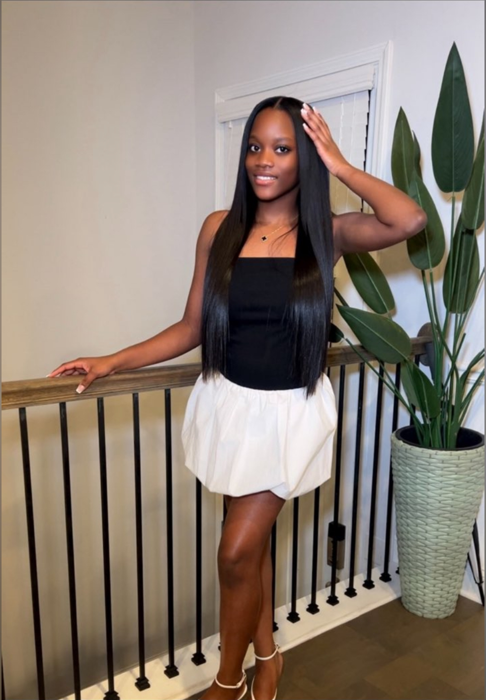

Omorinsola Babalola
Atlanta, Georgia Chapter President
I am a sophomore at Dunwoody High School with a strong passion for healthcare and improving medical access. I am committed to giving back to the community in which I was raised by leveraging my leadership skills and drive.
Through fundraising initiatives and strategic collaborations, I aim to expand healthcare access and make a meaningful impact on the lives of those in need.